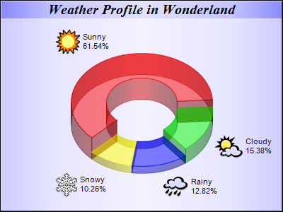

This example modifies the
Icon Pie Chart example by using a semi-transparent donut instead of a pie, and using metallic background color.
The following is the command line version of the code in "cppdemo/icondonut". The MFC version of the code is in "mfcdemo/mfcdemo". The Qt Widgets version of the code is in "qtdemo/qtdemo". The QML/Qt Quick version of the code is in "qmldemo/qmldemo".
#include "chartdir.h"
int main(int argc, char *argv[])
{
// The data for the pie chart
double data[] = {72, 18, 15, 12};
const int data_size = (int)(sizeof(data)/sizeof(*data));
// The depths for the sectors
double depths[] = {30, 20, 10, 10};
const int depths_size = (int)(sizeof(depths)/sizeof(*depths));
// The labels for the pie chart
const char* labels[] = {"Sunny", "Cloudy", "Rainy", "Snowy"};
const int labels_size = (int)(sizeof(labels)/sizeof(*labels));
// The icons for the sectors
const char* icons[] = {"sun.png", "cloud.png", "rain.png", "snowy.png"};
const int icons_size = (int)(sizeof(icons)/sizeof(*icons));
// Create a PieChart object of size 400 x 300 pixels
PieChart* c = new PieChart(400, 300);
// Use the semi-transparent palette for this chart
c->setColors(Chart::transparentPalette);
// Set the background to metallic light blue (CCFFFF), with a black border and 1 pixel 3D border
// effect,
c->setBackground(Chart::metalColor(0xccccff), 0x000000, 1);
// Set donut center at (200, 175), and outer/inner radii as 100/50 pixels
c->setDonutSize(200, 175, 100, 50);
// Add a title box using 15pt Times Bold Italic font and metallic blue (8888FF) background color
c->addTitle("Weather Profile in Wonderland", "Times New Roman Bold Italic", 15)->setBackground(
Chart::metalColor(0x8888ff));
// Set the pie data and the pie labels
c->setData(DoubleArray(data, data_size), StringArray(labels, labels_size));
// Add icons to the chart as a custom field
c->addExtraField(StringArray(icons, icons_size));
// Configure the sector labels using CDML to include the icon images
c->setLabelFormat(
"<*block,valign=absmiddle*><*img={field0}*> <*block*>{label}\n{percent}%<*/*><*/*>");
// Draw the pie in 3D with variable 3D depths
c->set3D(DoubleArray(depths, depths_size));
// Set the start angle to 225 degrees may improve layout when the depths of the sector are
// sorted in descending order, because it ensures the tallest sector is at the back.
c->setStartAngle(225);
// Output the chart
c->makeChart("icondonut.png");
//free up resources
delete c;
return 0;
}
© 2023 Advanced Software Engineering Limited. All rights reserved.